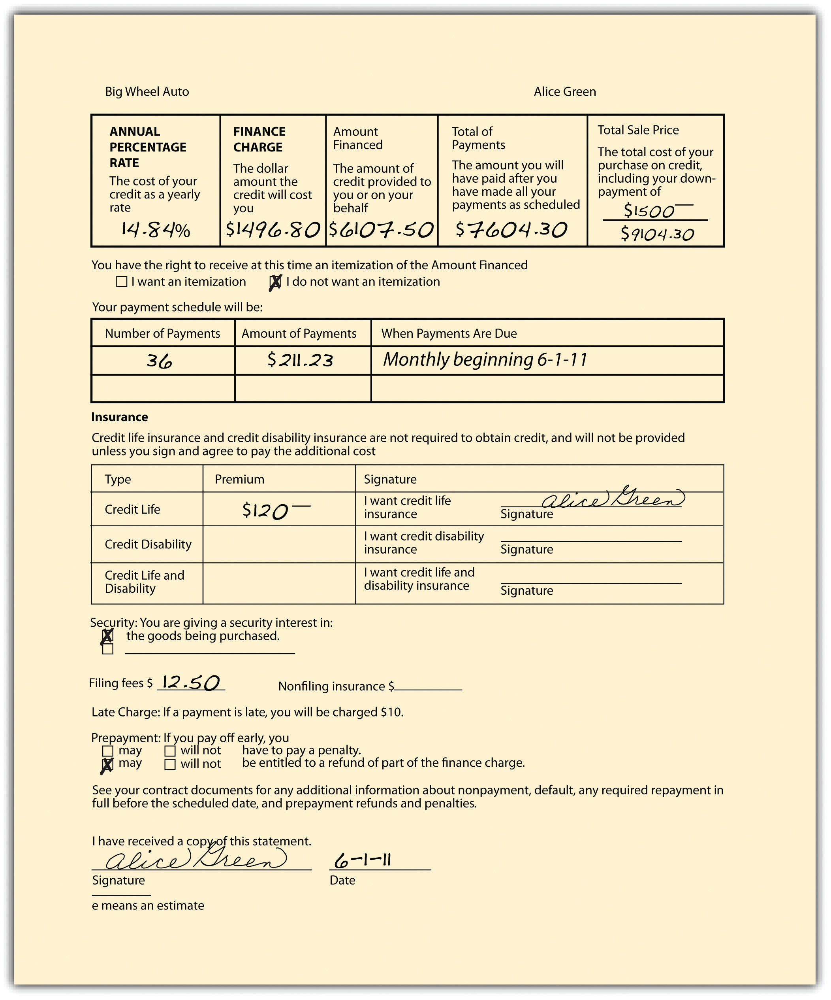

Lenders, whether banks or retailers, are not free to charge whatever they wish for credit. UsuryCharging interest in excess of the legal limit. laws establish a maximum rate of lawful interest. The penalties for violating usury laws vary from state to state. The heaviest penalties are loss of both principal and interest, or loss of a multiple of the interest the creditor charged. The courts often interpret these laws stringently, so that even if the impetus for a usurious loan comes from the borrower, the contract can be avoided, as demonstrated in Matter of Dane’s Estate (Section 32.3 "Cases").
Some states have eliminated interest rate limits altogether. In other states, usury law is riddled with exceptions, and indeed, in many cases, the exceptions have pretty much eaten up the general rule. Here are some common exceptions:
And there are others. Moreover, certain charges are not considered interest, such as fees to record documents in a public office and charges for services such as title examinations, deed preparation, credit reports, appraisals, and loan processing. But a creditor may not use these devices to cloak what is in fact a usurious bargain; it is not the form but the substance of the agreement that controls.
As suggested, part of the difficulty here is that governments at all levels have for a generation attempted to promote consumption to promote production; production is required to maintain politically acceptable levels of employment. If consumers can get what they want on credit, consumerism increases. Also, certainly, tight limits on interest rates cause creditors to deny credit to the less creditworthy, which may not be helpful to the lower classes. That’s the rationale for the usury exceptions related to pawnshop and payday loans.
Setting limits on what credit costs—as usury laws do—is one thing. Disclosing the cost of credit is another.
Until 1969, lenders were generally free to disclose the cost of money loaned or credit extended in any way they saw fit—and they did. Financing and credit terms varied widely, and it was difficult and sometimes impossible to understand what the true cost was of a particular loan, much less to comparison shop. After years of failure, consumer interests finally persuaded Congress to pass a national law requiring disclosure of credit costs in 1968. Officially called the Consumer Credit Protection Act, Title I of the law is more popularly known as the Truth in Lending ActA federal act ensuring that every individual who has need for consumer credit is given full disclosure of the terms and cost of the credit. (TILA). The act only applies to consumer credit transactions, and it only protects natural-person debtors—it does not protect business organization debtors.
The act provides what its name implies: lenders must inform borrowers about significant terms of the credit transaction. The TILA does not establish maximum interest rates; these continue to be governed by state law. The two key terms that must be disclosed are the finance charge and the annual percentage rate. To see why, consider two simple loans of $1,000, each carrying interest of 10 percent, one payable at the end of twelve months and the other in twelve equal installments. Although the actual charge in each is the same—$100—the interest rate is not. Why? Because with the first loan you will have the use of the full $1,000 for the entire year; with the second, for much less than the year because you must begin repaying part of the principal within a month. In fact, with the second loan you will have use of only about half the money for the entire year, and so the actual rate of interest is closer to 15 percent. Things become more complex when interest is compounded and stated as a monthly figure, when different rates apply to various portions of the loan, and when processing charges and other fees are stated separately. The act regulates open-end credit (revolving credit, like charge cards) and closed-end credit (like a car loan—extending for a specific period), and—as amended later—it regulates consumer leases and credit card transactions, too.
Figure 32.1 Credit Disclosure Form
By requiring that the finance charge and the annual percentage rate be disclosed on a uniform basis, the TILA makes understanding and comparison of loans much easier. The finance chargeThe total cost of credit a customer must pay on a consumer loan, including interest. is the total of all money paid for credit; it includes the interest paid over the life of the loan and all processing charges. The annual percentage rate is the true rate of interest for money or credit actually available to the borrower. The annual percentage rate must be calculated using the total finance charge (including all extra fees). See Figure 32.1 "Credit Disclosure Form" for an example of a disclosure form used by creditors.
The Consumer Leasing Act (CLA) amends the TILA to provide similar full disclosure for consumers who lease automobiles or other goods from firms whose business it is to lease such goods, if the goods are valued at $25,000 or less and the lease is for four months or more. All material terms of the lease must be disclosed in writing.
In 1989, the Fair Credit and Charge Card Disclosure Act went into effect. This amends the TILA by requiring credit card issuers to disclose in a uniform manner the annual percentage rate, annual fees, grace period, and other information on credit card applications.
The 1989 act did make it possible for consumers to know the costs associated with credit card use, but the card companies’ behavior over 20 years convinced Congress that more regulation was required. In 2009, Congress passed and President Obama signed the Credit Card Accountability, Responsibility, and Disclosure Act of 2009 (the Credit Card Act). It is a further amendment of the TILA. Some of the salient parts of the act are as follows:
The Federal Reserve Board is to issue implementing rules.
Creditors who violate the TILA are subject to both criminal and civil sanctions. Of these, the most important are the civil remedies open to consumers. If a creditor fails to disclose the required information, a customer may sue to recover twice the finance charge, plus court costs and reasonable attorneys’ fees, with some limitations. As to the Credit Card Act of 2009, the issuing companies were not happy with the reforms. Before the law went into effect, the companies—as one commentator put it—unleashed a “frenzy of retaliation,”Liz Pulliam Weston, “Credit Card Lenders Go on a Rampage,” MSN Money, November 25, 2009. by repricing customer accounts, changing fixed rates to variable rates, lowering credit limits, and increasing fees.
The federal TILA is not the only statute dealing with credit disclosures. A uniform state act, the Uniform Consumer Credit Code, as amended in 1974, is now on the books in twelve US jurisdictions,States adopting the Uniform Consumer Credit Code are the following: Colorado, Idaho, Indiana, Iowa, Kansas, Maine, Oklahoma, South Carolina, Utah, Wisconsin, Wyoming, and Guam. Cornell University Law School, “Uniform Laws.” http://www.law.cornell.edu/uniform/vol7.html#concc. though its effect on the development of modern consumer credit law has been significant beyond the number of states adopting it. It is designed to protect consumers who buy goods and services on credit by simplifying, clarifying, and updating legislation governing consumer credit and usury.
Disclosure of credit costs is a good thing. After discovering how much credit will cost, a person might decide to go for it: get a loan or a credit card. The potential creditor, of course, should want to know if the applicant is a good risk; that requires a credit check. And somebody who knows another person’s creditworthiness has what is usually considered confidential information, the possession of which is subject to abuse, and thus regulation.
Through the 1960s, banks and other lending and credit-granting institutions regularly discriminated against women. Banks told single women to find a cosigner for loans. Divorced women discovered that they could not open store charge accounts because they lacked a prior credit history, even though they had contributed to the family income on which previous accounts had been based. Married couples found that the wife’s earnings were not counted when they sought credit; indeed, families planning to buy homes were occasionally even told that the bank would grant a mortgage if the wife would submit to a hysterectomy! In all these cases, the premise of the refusal to treat women equally was the unstated—and usually false—belief that women would quit work to have children or simply to stay home.
By the 1970s, as women became a major factor in the labor force, Congress reacted to the manifest unfairness of the discrimination by enacting (as part of the Consumer Credit Protection Act) the Equal Credit Opportunity Act (ECOA) of 1974. The act prohibits any creditor from discriminating “against any applicant on the basis of sex or marital status with respect to any aspect of a credit transaction.” In 1976, Congress broadened the law to bar discrimination (1) on the basis of race, color, religion, national origin, and age; (2) because all or a part of an applicant’s income is from a public assistance program; or (3) because an applicant has exercised his or her rights under the Consumer Credit Protection Act.
Under the ECOA, a creditor may not ask a credit applicant to state sex, race, national origin, or religion. And unless the applicant is seeking a joint loan or account or lives in a community-property state, the creditor may not ask for a statement of marital status or, if you have voluntarily disclosed that you are married, for information about your spouse, nor may one spouse be required to cosign if the other is deemed independently creditworthy. All questions concerning plans for children are improper. In assessing the creditworthiness of an applicant, the creditor must consider all sources of income, including regularly received alimony and child support payments. And if credit is refused, the creditor must, on demand, tell you the specific reasons for rejection. See Rosa v. Park West Bank & Trust Co. in Section 32.3 "Cases" for a case involving the ECOA.
The Home Mortgage Disclosure Act, 1975, and the Community Reinvestment Act (CRA), 1977, get at another type of discrimination: redlining. This is the practice by a financial institution of refusing to grant home loans or home-improvement loans to people living in low-income neighborhoods. The act requires that financial institutions within its purview report annually by transmitting information from their Loan Application Registers to a federal agency. From these reports it is possible to determine what is happening to home prices in a particular area, whether investment in one neighborhood lags compared with that in others, if the racial or economic composition of borrowers changed over time, whether minorities or women had trouble accessing mortgage credit, in what kinds of neighborhoods subprime loans are concentrated, and what types of borrowers are most likely to receive subprime loans, among others. “Armed with hard facts, users of all types can better execute their work: Advocates can launch consumer education campaigns in neighborhoods being targeted by subprime lenders, planners can better tailor housing policy to market conditions, affordable housing developers can identify gentrifying neighborhoods, and activists can confront banks with poor lending records in low income communities.”Kathryn L.S. Pettit and Audrey E. Droesch, “A Guide to Home Mortgage Disclosure Act Data,” The Urban Institute, December 2008, http://www.urban.org/uploadedpdf/1001247_hdma.pdf. Under the CRA, federal regulatory agencies examine banking institutions for CRA compliance and take this information into consideration when approving applications for new bank branches or for mergers or acquisitions.
It is in the interests of all consumers that people who would be bad credit risks not get credit: if they do and they default (fail to pay their debts), the rest of us end up paying for their improvidence. Because credit is such a big business, a number of support industries have grown up around it. One of the most important is the credit-reporting industry, which addresses this issue of checking creditworthiness. Certain companies—credit bureauA private firm that maintains consumer credit data files and provides credit information to authorized users for a fee.s—collect information about borrowers, holders of credit cards, store accounts, and installment purchasers. For a fee, this information—currently held on tens of millions of Americans—is sold to companies anxious to know whether applicants are creditworthy. If the information is inaccurate, it can lead to rejection of a credit application that should be approved, and it can wind up in other files where it can live to do more damage. In 1970, Congress enacted, as part of the Consumer Credit Protection Act, the Fair Credit Reporting Act (FCRA) to give consumers access to their credit files in order to correct errors.
Under this statute, an applicant denied credit has the right to be told the name and address of the credit bureau (called “consumer reporting agency” in the act) that prepared the report on which the denial was based. (The law covers reports used to screen insurance and job applicants as well as to determine creditworthiness.) The agency must list the nature and substance of the information (except medical information) and its sources (unless they contributed to an investigative-type report). A credit report lists such information as name, address, employer, salary history, loans outstanding, and the like. An investigative-type report is one that results from personal interviews and may contain nonfinancial information, like drinking and other personal habits, character, or participation in dangerous sports. Since the investigators rely on talks with neighbors and coworkers, their reports are usually subjective and can often be misleading and inaccurate.
The agency must furnish the consumer the information free if requested within thirty days of rejection and must also specify the name and address of anyone who has received the report within the preceding six months (two years if furnished for employment purposes).
If the information turns out to be inaccurate, the agency must correct its records; if investigative material cannot be verified, it must be removed from the file. Those to whom it was distributed must be notified of the changes. When the agency and the consumer disagree about the validity of the information, the consumer’s version must be placed in the file and included in future distributions of the report. After seven years, any adverse information must be removed (ten years in the case of bankruptcy). A person is entitled to one free copy of his or her credit report from each of the three main national credit bureaus every twelve months. If a reporting agency fails to correct inaccurate information in a reasonable time, it is liable to the consumer for $1,000 plus attorneys’ fees.
Under the FCRA, any person who obtains information from a credit agency under false pretenses is subject to criminal and civil penalties. The act is enforced by the Federal Trade Commission. See Rodgers v. McCullough in Section 32.3 "Cases" for a case involving use of information from a credit report.
Credit is an important part of the US economy, and there are various laws regulating its availability and disclosure. Usury laws prohibit charging excessive interest rates, though the laws are riddled with exceptions. The disclosure of credit costs is regulated by the Truth in Lending Act of 1969, the Consumer Leasing Act of 1988, the Fair Credit and Charge Card Disclosure Act of 1989, and the Credit Card Accountability, Responsibility, and Disclosure Act of 2009 (these latter three are amendments to the TILA). Some states have adopted the Uniform Consumer Credit Code as well. Two major laws prohibit invidious discrimination in the granting of credit: the Equal Credit Opportunity Act of 1974 and the Home Mortgage Disclosure Act of 1975 (addressing the problem of redlining). The Fair Credit Reporting Act of 1970 governs the collection and use of consumer credit information held by credit bureaus.